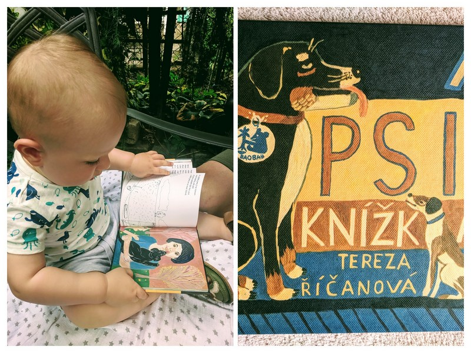

Náš Olí naprosto zbožňuje psy. Už z dálky na ně při procházkách nadšeně ukazuje a nebojí se ani těch větších plemen. Proto jsem při výběru dalšího titulu ke zrecenzování od knihkupectví Megaknihy.cz myslela především na něj a volba tak padla na Psí knížku Terezy Říčanové.
Není to vyloženě leporelo, ale kniha je tištěna na poměrně silném papíře, takže pevně věřím, že přežije i nenechavé batolecí ručičky. Navíc se jedná o formát do dětských rukou jako dělaný, jak si můžete povšimnout níže. Velikost knížky ji přímo předurčuje k tomu, aby se stala věrným společníkem na cestách, u doktora, ve frontě… prostě všude tam, kde hrozí, že s dítkem budete muset čekat. A Oli čekání skutečně velmi nerad 8-) Psí knížka je maličká, a tak se hravě vleze do každé přebalovací tašky.

Jak je pro nakladatelství Baobab typické, i Psí knížku zdobí hravé a originální ilustrace, které vytvořila sama autorka. Vyprávění obsáhne většinu důležitých momentů ze života psa - návštěvu veterináře, venčení, narození štěňat… Nebrání se však ani tématu smrti. Mně knížka přijde svou reálností půvabná, i když věřím, že nesedne každému a někdo dá pro své dítě spíš přednost prvoplánovému příběhu. Mně osobně se ale líbí, jak je zde psí život vylíčen bez příkras a je to přesně ten pohled, který bych chtěla Olímu předat - že pejsci občas i zlobí a neposlouchají, smrdí :) a až zestárnou, tak umřou, ale zároveň soužití s nimi přináší i radost a spoustu zábavy.